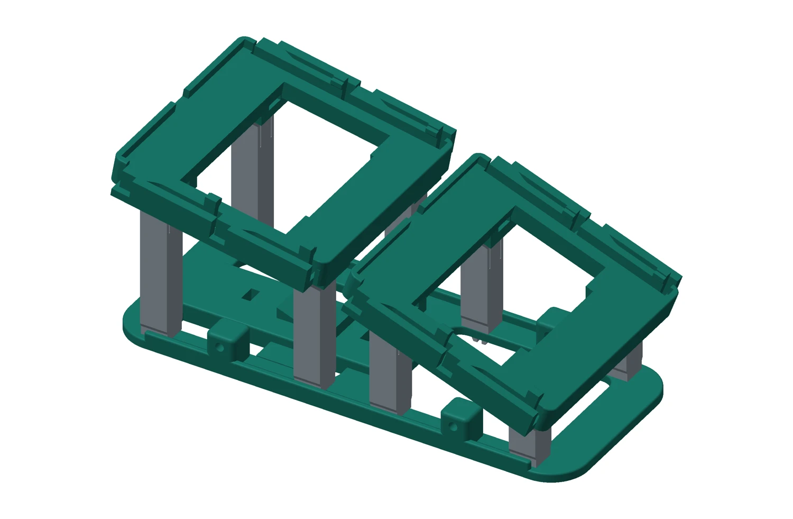

Две панели, два наклона
Передняя панель наклонена на 20°, задняя — на 10°. Центр задней поднят на 15 мм.
Домашний проект / 3D-печать / Солнечная энергия
Две солнечные панели, маленький мотор
и детали, напечатанные дома.
Мы придумали конструкцию, проверили посадки, собрали машинку — и она поехала. Теперь этот проект можно повторить.
Собрана и работает Ноябрь 2026

Как это устроено
Солнечные панели питают мотор. Передача вращает ось, а колёса приводят машинку в движение. Всё остальное — конструкция, которая держит эти детали вместе.

Передняя панель наклонена на 20°, задняя — на 10°. Центр задней поднят на 15 мм.
Ложемент встроен в основание. Корпус мотора фиксируется стяжкой, а межосевое расстояние передачи выбрано по напечатанным пробникам.
Восемь прямых стоек соединяют шасси и рамы. Крепления встроены в оба конца каждой стойки — без отдельных винтов и клиньев.
От модели к настоящей вещи
Мы меняли форму, печатали пробники и проверяли каждое соединение. Так появились цельное шасси, крепкие прижимы и стойки, которые удобно собирать.
Одно шасси, две рамы и восемь стоек. Поддержки и ориентацию выбрать в своём слайсере — в STL встроенных поддержек нет.
Установить оси, колёса и передачу. Поставить мотор в ложемент и закрепить стяжкой.
Защёлкнуть стойки в рамы и шасси, провести провода через центральные окна и установить панели.
Проверить свободное вращение колёс и запустить машинку. Самая приятная часть проекта.
Проверка в деле
Видео настоящей собранной машинки.
Плеер YouTube загружается после нажатия. Открыть видео на YouTube
Повторить проект
Все актуальные модели в одном месте.
Печатай, меняй конструкцию и делай свою версию солнечной машинки.
| Деталь | Файл | Количество |
|---|---|---|
| Шасси с ложементом мотора | solar-car-chassis-v2_10.stl | 1 |
| Передняя рама | solar-car-bf5-F-frame.stl | 1 |
| Задняя рама | solar-car-bf5-R-frame.stl | 1 |
| Передние стойки F1 / F2 | solar-car-bf5-F1-post.stl / F2-post.stl | 2 каждого типа |
| Задние стойки R1 / R2 | solar-car-bf5-R1-post.stl / R2-post.stl | 2 каждого типа |
Отдельно нужны две солнечные панели 55 × 55 × 2 мм, мотор диаметром 24 мм, колёса диаметром 30 мм, оси диаметром 2 мм, шестерёнки, провода и стяжка. Эти детали не печатаются. Использованы комплектующие исходной машинки.
В архиве также есть общие раскладки рам и стоек. Выбирай либо раскладки, либо отдельные детали, чтобы не напечатать дубликаты. Все размеры в миллиметрах; масштаб 100%.
Шасси V2.10 · Крепления панелей BF5 · Работоспособность собранной машинки подтверждена автором. Посадки зависят от принтера и комплектующих.